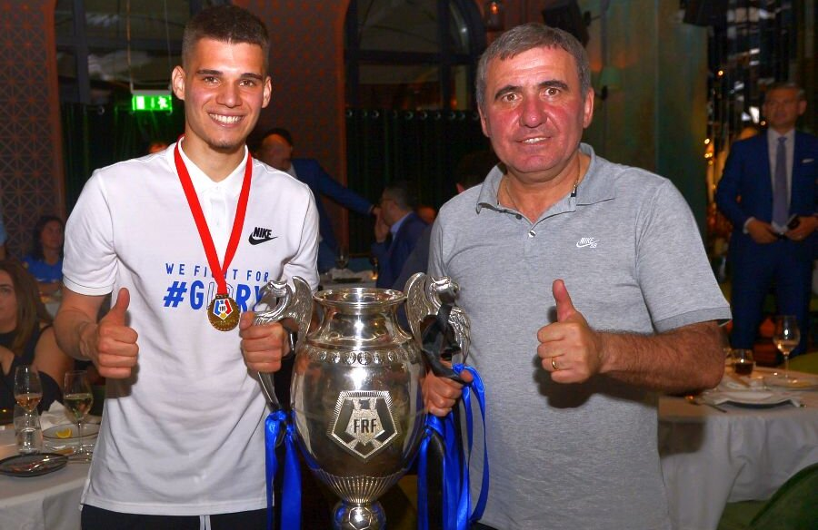
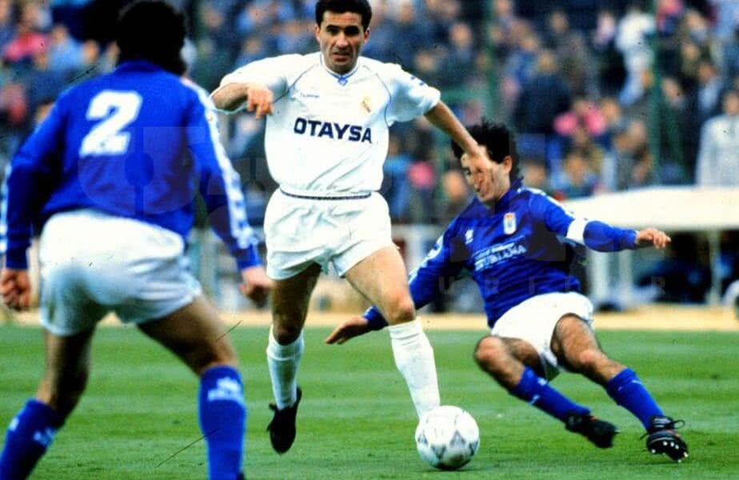

"Sa joci fotbal e un lucru simplu, dar sa joci un fotbal simplu e cel mai greu lucru care exista!"
Gheorghe Hagi
Informatii generale
Gheorghe Hagi(n. 5 februarie 1965, Săcele, Dobrogea, România) este un fost fotbalist român, considerat unul dintre cei mai buni mijlocași ofensivi în Europa anilor '80 și '90 și cel mai mare fotbalist român din toate timpurile.
Supranumit "Maradona din Carpați", Hagi este considerat un erou în România. A fost numit fotbalistul român al anului de șapte ori, și este privit ca unul dintre cei mai buni fotbaliști ai generației sale. Ca un constructor de joc avansat, a fost recunoscut pentru dribling, tehnică, viziune, pase și finalizare.
Este căsătorit cu Marilena Vlahbei din 1995 și au împreună doi copii: Kira Hagi (născută în 1996) și Ianis Hagi (născut în 1998). Relația este discretă, soția însoțindu-l pe antrenorul Viitorului doar la evenimentele mondene, preferând să se ocupe departe de ochii presei de cei doi copii ai lor: Kira, care iubește teatrul și studiază în America, și Ianis, care îi calcă pe urme tatălui său și este jucător de fotbal.
Ca jucător, Hagi a fost un purtător clasic de număr 10 (conducător de joc) care se remarca în teren prin claritatea paselor trimise către atacanţi şi şuturile eficace la poartă, atunci când se afla el însuşi în poziţie de finalizator. Câteva din golurile sale au intrat în istoria fotbalului. Hagi reuşea să depăşească uşor mulţi adversarii prin dribling şi găsea deseori de unul singur mijloace de câştigare a unui meci. Deşi nu excela la capitolul viteză, se orienta excelent în teren şi reuşea să fie prezent în bune poziţii de joc, ceea ce îi permitea fie să paseze decisiv, fie să şuteze cu succes de la distanţă.
Hagi a fost şi un excelent executant de lovituri libere, înscriind numeroase goluri din poziţii fixe.
Echipa de club
Cariera lui Hagi ca jucător profesionist (sau semi-profesionist - în timpul regimului socialist) poate fi împărțită în mai multe perioade:
1978-1987: Debutul și consacrarea la nivel național
Gică Hagi și-a început cariera în fotbal la echipa de copii și juniori a Farului Constanța, sub îndrumarea lui Iosif Bukossy, fiind oficial legitimat la 13 ani. Doi ani mai târziu, este selectat de Federație în lotul echipei Luceafărul București, care în acea perioadă era practic echipa națională de juniori a Românei, locul unde se formau marile talente. După alți doi ani tânărul Gică se întoarce la Farul Constanța, fapt ce a marcat și debutul său în Divizia A la 11 septembrie 1982. Un an mai târziu se transferă la Sportul Studențesc. Va activa la această formație timp de patru ani, perioadă care a marcat ascensiunea sa în topul fotbalului românesc, fiind doi ani consecutiv golgheter. La 10 august 1983, Hagi își face debutul în echipa națională într-un meci disputat în compania Norvegiei și încheiat cu o remiză albă. Un mai târziu va face parte din lotul echipei naționale care a participat la Euro '84 din Franța. La Sportul Studențesc, unde juca rol de "copil teribil", Hagi face câteva meciuri de-a dreptul senzaționale, contribuind decisiv în sezonul 1985-1986 la câștigarea titlului de vicecampioni (cea mai bună performanță de până azi a clubului din Regie), dar și la 3 calificări consecutive în Cupa UEFA (1983-84; 1984-85; 1985-86).
1987-1990: Consacrarea la nivel internațional
În iarna 1986/1987, Gheorghe Hagi este împrumutat la proaspăt campioana Europei de atunci, Steaua București, în vederea cooptării în lotul pentru partida cu Dinamo Kiev din Supercupa Europei. Deși contractul inițial a fost doar pentru acest meci, după ce Hagi a fost autorul singurului gol, victorios, el nu a mai fost lăsat să se întoarcă în Regie. În cei patru ani petrecuți în roșu-albastru, Gică Hagi s-a consacrat definitiv în fotbalul internațional. Și-a înscris în palmares 3 titluri de campion cu Steaua (1987, 1988 și 1989), 3 cupe ale României în aceiași ani precum și Supercupa Europei din 1987. Cu Steaua a rămas în topul echipelor din Europa, unde a ajuns în semifinala CCE din 1988, echipa fiind eliminată de Benfica și în finala CCE din 1989, pierdută în fața echipei italiene AC Milan (fiind desemnat al doilea jucător ca valoare din competiție, după Marco van Basten). La nivelul echipei naționale, participă cu România la Cupa Mondială din 1990 - Italia.
1990-1996: Anii de maturitate
Hagi este liderul incontestabil al echipei României și contribuie decisiv la cele mai mari succese din istoria Naționalei. Hagi semnase chiar înaintea amicalului Belgia-România, jucat la Bruxelles, cu aproape trei săptămâni înainte de startul Campionatului Mondial din Italia (mai 1990), cu Real Madrid, suma de transfer fiind 400 milioane de pesetas, aproximativ 4 milioane de dolari și devenea în acel moment cel mai scump jucător din istorie cumpărat de Real Madrid. A jucat 2 sezoane într-o echipă cu mulți fotbaliști de valoare, precum Michel, Butragueno și Hierro, iar românul a purtat tricoul cu numărul 10, cel care se acorda, mai ales atunci, celui mai valoros fotbalist al echipei. I-a avut antrenori pe galezul John Toshack, doar pentru câteva meciuri, apoi pe bancă au urmat Alfredo Di Stefano și Radomir Antic în anul următor. Golul înscris de la mijlocul terenului de român, în meciul Real Madrid - Osasuna, din sezonul 1990/1991, a fost votat drept cel mai spectaculos gol de la mare distanță de cititorii cotidianului spaniol Marca. În 1992 a fost transferat la Brescia pentru 2,4 milioane de dolari, unde antrenor era Mircea Lucescu iar în echipă se aflau și colegii lui Hagi de la Națională, Dănuț Lupu, Dorin Mateuț, Ioan Sabău și Florin Răducioiu. În primul sezon al venirii sale, echipa italiană a retrogradat în Serie B; în următorul sezon Hagi a contribuit la promovarea echipei în Serie A dar și la câștigarea Cupei Anglo-Italiene (1993-94). După prestația formidabilă de la Campionatul Mondial din 1994 din SUA, antrenorul Barcelonei, olandezul Johan Cruyff l-a cooptat pe Hagi la Barcelona alături de stele precum Stoicikov, Romario, Koeman sau Guardiola. Din 1995 a devenit coleg de echipă cu Gică Popescu și cu Figo. Cea mai frumoasă reușită a lui Hagi pentru Barcelona este golul marcat de la mijlocul terenului într-un meci cu Celta Vigo. Nu a avut o relație prea bună cu Johan Cruyff, motiv pentru care a și plecat la Galatasaray, în 1996.
1996-2001: Succesul răsunător din Turcia și retragerea
Gică se transferă la Galatasaray Istanbul, formația cu care va avea cele mai mari reușite în plan fotbalistic, câștigând o popularitate imensă printre suporterii turci. Câștigă 4 titluri de campion (1996–97, 1997–98, 1998–99, 1999–00), 2 cupe ale Turciei (1998-99, 1999-00) și Supercupa Turciei de 2 ori (1996, 1997), iar în anul 2000 va conduce echipa spre câștigarea Cupei UEFA, sub comanda lui Fatih Terim (în finală a fost eliminat în minutul '94 pentru o lovitură cu cotul asupra lui Tony Adams) și Supercupei Europei, cu Mircea Lucescu pe bancă, performanțe neegalate în istoria fotbalului din Turcia. Sezonul competițional 2000/2001 va fi ultimul în fotbalul activ. Hagi a marcat un gol fabulos în victoria obținută de turci cu francezii de la Monaco, meci desfășurat în acel sezon de Champions League. Reușita a fost votată de microbiști în sondajul UEFA în topul celor mai frumoase execuții din istoria cupelor europene. După meciul Galatasaray – Trabzonspor 4-0 (din etapa a 34-a, ultima, a campionatului Turciei), în care a marcat două goluri (în min. 25 și 44, ultimul din penalty), se retrage din activitatea de jucător. A devenit un idol pentru fanii turci, aceștia scandându-i numele chiar și după retragerea din fotbal și cântând un refren devenit celebru, "I love you Hagi".
Echipa națională
Hagi a debutat la echipa națională la vârsta de 18 ani, pe 10 august 1983 la Oslo, în meciul amical Norvegia - România. Până atunci jucase pentru România în echipa de juniori sub 16 ani (4 meciuri), echipa de juniori sub 17 ani (13 meciuri, 1 gol), echipa de juniori sub 18 ani (32 meciuri, 9 goluri) și echipa olimpică (4 meciuri).În 1985, pe 16 octombrie, Mircea Lucescu, pe atunci antrenor al echipei naționale, l-a desemnat pentru prima oară pe Hagi căpitan al echipei naționale. Hagi avea doar 20 de ani și meciul, disputat pe stadionul 23 august împotriva Irlandei de Nord, era decisiv pentru calificarea la Campionatul Mondial de Fotbal din Mexic - 1986. Evoluția lui Hagi a fost foarte ștearsă și mulți au criticat la acea vreme decizia lui Lucescu. Cert este că vreme de câțiva ani căpitanul "de drept" al echipei naționale a devenit portarul Silviu Lung, un jucător mult mai matur și mai experimentat decât Hagi. Totuși, după retragerea lui Silviu Lung (în 1990), Hagi a devenit repede căpitanul de drept al naționalei. A fost de 65 de ori căpitanul echipei naționale, conducând din teren echipa României la 2 Cupe Mondiale (1994 - USA și 1998 - Franța) și la 2 Campionate Europene (1996 - Anglia și 2000 - Belgia și Olanda).De asemenea, a mai participat cu România și la Campionatul European din 1984 - Franța (ca rezervă) și la Cupa Mondială din 1990 - Italia (ca titular).
După Campionatul Mondial din 1998, Gheorghe Hagi decide să se retragă din echipa națională ca după câteva luni să se răzgândească și să joace la Campionatul European din 2000. Hagi a condus România până în sferturi, unde a fost eliminată de Italia. În acel meci Hagi a primit cartonaș roșu în minutul '55 după un fault asupra lui Antonio Conte, devenind ultimul meci sub tricolorul românesc. La nivelul naționalei, era, în acel moment, recordmanul selecțiilor (125), al golurilor marcate (35), al prezențelor pe post de căpitan (62) și al longevității (16 ani, 10 luni și 14 zile).
Pe 24 aprilie 2001 are loc meciul său demonstrativ de retragere (”Gala Hagi”), la București, pe stadionul Național, o selecționată a României înfruntând o selecționată mondială (Stelele Lumii), scorul fiind 2-2. La acest meci au participat 80.000 de fani din toată țara. La eveniment au participat și numeroase personalități ale fotbalului european, printre care Joseph Blatter, președintele FIFA, Michel Platini, foști colegi ai lui Hagi de la Brescia, FC Barcelona, Real Madrid, Galatasaray Istanbul.
În martie 2008 a fost decorat cu Ordinul „Meritul Sportiv” clasa a II-a, „pentru rezultatele obținute în perioada 1990—2000 prin participarea la turneele finale ale campionatelor mondiale și europene de fotbal și pentru întreaga activitate sportivă”.
Palmaresul jucătorului Gică Hagi
Competiția
Rezultat
Număr reușite
Campionat
Campion
7
Vicecampion
1
Cupă
Campion
5
Vicecampion
2
Supercupă
Campion
4
Cupa Campionilor Europeni
Vicecampion
1
Cupa UEFA
Campion
1
Supercupa Europei
Campion
2
Goluri marcate de-a lungul carierei
Echipa
Perioada de joc
Apariții
Goluri
FC Farul Constanța
1982-1983
20
7
Sportul Studenţesc
1983-1987
108
58
Steaua Bucureşti
1987-1990
97
76
Real Madrid
1990-1992
64
16
Brescia
1992-1994
61
14
Barcelona
1994-1996
36
7
Galatasaray
1996-2001
132
59
România
1983-2000
125
35
Total
641
272
Cariera de antrenor
Prima tentativă ca antrenor a lui Hagi a fost la echipa națională în 2001, unde a deținut postul timp de cinci luni. În toamna lui 2003 a fost antrenor pentru scurt timp la Bursaspor, iar din martie 2004 a fost antrenor la Galatasaray timp de un an după care și-a dat demisia. La gruparea din Istanbul a câștigat primul trofeu al carierei de antrenor, Cupa Turciei. A fost manager general al echipei FCU Politehnica Timișoara în returul campionatului Diviziei A 2005-2006 dându-și din nou demisia. După retragerea din cariera de fotbalist, principalul stadion din Constanța a preluat numele lui Hagi, dar după ce acesta a decis să preia pe Poli, numele arenei a redevenit Farul.
În perioada iunie - 20 septembrie 2007, Hagi a fost antrenor principal la FC Steaua București. În scurtul mandat, a reușit să califice echipa în grupele Ligii Campionilor prin depășirea a două tururi preliminare, dar în campionat rezultatele au întârziat să apară. După un meci pierdut cu Sparta Praga în Liga Campionilor, Hagi a demisionat de la Steaua.În octombrie 2010, Hagi a revenit la conducerea echipei turce Galatasaray, cu care a semnat un contract pentru un sezon și jumătate. În prezent el este antrenorul echipei Viitorul Constanța, echipa pe care o și patronează. El își dorește să mai antreneze și echipa Steaua București dar și echipa Galatasaray Istanbul măcar o dată. În 2013, după o serie de rezultate dezamăgitoare ale echipei patronate de el la începutul campionatului în sezonul 2013-2014, cu doar două puncte acumulate în 6 etape ale Ligii I, Hagi s-a hotărât să conducă antrenamentele Viitorului Constanța.
După două sezoane în care s-a salvat pe final de retrogradare, Viitorul s-a obișnuit cu Liga 1, iar cea mai bună dovadă a fost jocul practicat de puștii lui Hagi în ediția 2014-2015, parcursul excelent i-au făcut pe reprezentanții echipelor din Liga I (președintele, antrenorul și căpitanul echipei de la toate echipele de Liga I), pe ziariștii de sport și publicul larg să-l voteze pe Gheorghe Hagi drept antrenorul anului 2015.
Rezultatele echipei din actualul sezon nu sunt trecute cu vederea și sunt apreciate de microbiști, Gheorghe Hagi demonstrând că este un antrenor pe măsura renumelui său ca fotbalist. În sezonul 2016-2017, reușește să câstige Campionatul României cu FC Viitorul.
Palmaresul antrenorului Gică Hagi
Echipa
Competiția
Număr reușite
Sezonul
Galatasaray
Cupa Turciei
1
2004/2005
FC Viitorul
Liga I
1
2016/2017
Cupa României
1
2018/2019
Supercupa Românei
1
2019
Galerie foto

Gică Hagi și Ianis Hagi, la câștigarea Ligii IGheorghe Hagi în timpul unui meci de la Campionatul Mondial din 1994Gheorghe Hagi, antrenor la GalatasarayGheorghe Hagi, câștigător Supercupa Europei 1987Gheorghe Hagi, câștigător Cupa UEFA 2000

Gheorghe Hagi, jucător la Real Madrid